Introduction to Parallel Computing
Introduction to Parallel Computing
- Rise of parallel computing
- Common reasons why people resist parallel computing
- Fundamentals of parallel computing
- Examples
Rise of parallel computing
Mainframes used to be the only game in town when it come to tackling scientific/numerical problems of interest. These beasts were awesome at this work but had two fundamental drawbacks:
Expenses: their hardware was costly and big. Special datacenters were required to house, power and cool them. Skilled staff required to operate and administer them.
Usability: vendors had their own programming APIs and standards, software selection was limited.
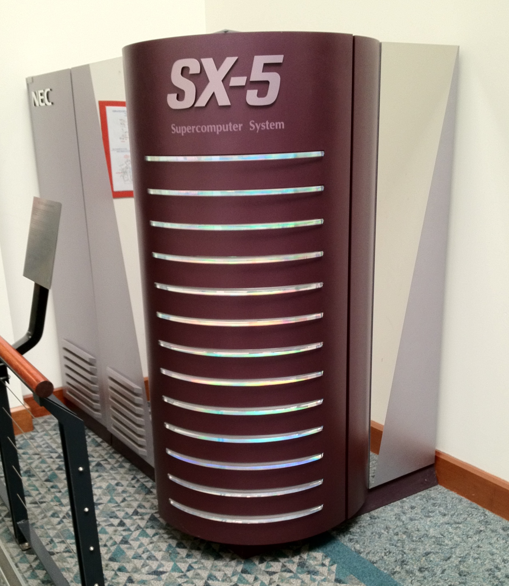
The NEC SX-5 at the Swiss National Supercomputer Centre (1999-2004) had a max measured
performance of 65 GFLOPs, covered a floor area of 55m2 and consumed 55 kW of power at peak load.
One can buy a new Mac Pro configured with up to 7 TFLOPS of performance for less than 12,500NZD.
Supercomputing is now readily available to the masses.
Powerful commodity hardware

Processors
Modern CPUs have a max performance on the order 100-300 GFLOPs. Rise in mobile and ultra-scale computing has
driven improvements in power efficiency.
Networking
Multiple high-speed network technologies exist (InfiniBand, Ethernet). No need to rely on specialized networks
from a particular vendor.
Powerful commodity hardware

Storage
High-speed and parallel filesystems now available to anyone. Free and open-sourced filesystems available.
SSDs are having a disruptive effect on data-intensive computing.
External connections (USB3, Thunderbolt)
allow high-speed access to large multi-terabyte storage (disks, tape).
Powerful commodity hardware

Popularity in accelerator technology has risen sharply in recent years.
- New software frameworks (CUDA, OpenCL) and initiatives (OpenACC) have greatly increased the
usability of these devices.
- Hardware vendors have leveraged lower-priced commodity devices to engineer and manufacture
these specialized devices.
These devices exploit massive parallelization and vectorization.
In 1994, two NASA scientists strug together 30 identical PCs to create a scientific
computing system they called the Beowulf Cluster. The Message Passing Interface software was
used to allow programmers to use multiple PCs to work on a single problem. Their design formed the
basis for the common cluster design now found worldwide.
This was the beginning of the big push in distributed computing (and parallel computing).
Misintepretation of Moore's Law
It's not a law!!
Gordon Moore observed that the number of transistors on integrated circuits seem to double every 2 years.
Another Intel manager, David House, suggested that improved manufacturing practices would lower the time to
18 months.
It refers to transistor density -not clock rate
For ~42 years, the increased transistor counts meant higher clock rates and more instruction-level parallelism.
Users became accustom to newer CPUs speeding up their applications "auto-magically".
Misintepretation of Moore's Law
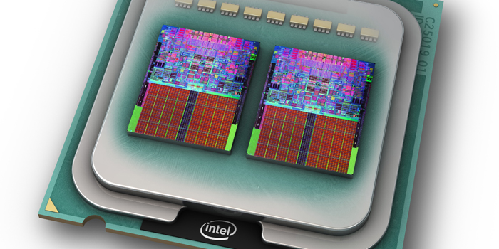
By ~2003, this "free speed-up" ended:
- transistor density couldn't be increased
- power requirements became unsustainable
To continue increasing computational power, CPU vendors introduced CPUs with multiple compute units (or cores).
Applications had to be able to utilize these multiple cores to harness the additional power in new CPUs.
Parallel computing was no longer an optional activity and was forced into the mainstream.
Common reasons against embracing parallel computing
Next year's hardware will be faster
- The "pseudo-Moore's Law" of a doubling of clock rate every 18 months is gone
- New CPUs/GPUs/Accelerators incorporate MORE parallelism
- More focus on energy efficiency than performance
- New computer hardware is getting more compilcated (CPU + Accelerators)
I don't have access to parallel hardware
- Most current CPUs are multicore.
- GPU computing is a real possibility for most workstations/PCs/laptops
- Most universities/labs have cluster resources
- Cloud computing providers (such as Amazon) offer free trial usage schemes
- NeSI has methods for free access to its computing resources for NZ researchers
No time/resource to rewrite my code
- adding multicore support is trival. Multiple CPU parallel support requires more work
and planning.
- existing libraries/frameworks may be able do the parallel work for you
- have you compared the time required for parallel re-development to the time required to
perform a serial job?
- NeSI can offer you assistance in parallel program development
Too risky to change my workflow
- switch to application with more parallelism
- time-savings could be used for more research
- additional ensembles could enhance your scientific outputs
- code/workflow redevelopment may result you addressing more challenging/interesting science.
No risk, no reward
The fundamentals of parallel computing
IBM Master Inventor, Gene Amdahl, presented a conference paper in 1967 that analytically
explained how much a program can be sped up by adding parallelism.
The speedup of a program using multiple processes is limited by the time/portion of
the program that can only be performed sequentially.
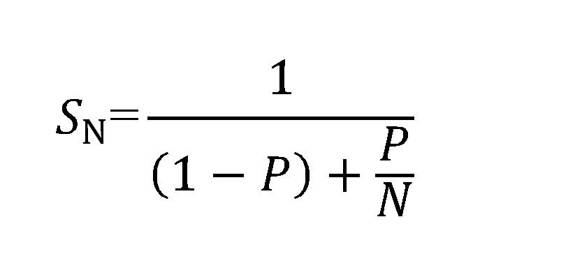
 Doesn't take account of:
Doesn't take account of:
- system and software overhead
- workload imbalance
Amdahl's Law (Highlights)
Can a program be 100% parallelized?
Yes! Such programs are said
to be embarassingly parallel. Processors work independently. Little/no information is
passed between them.
Bottlenecks that prevent perfect speedup
-- passing information between tasks
-- I/O
-- spawning the individual tasks
-- explicit required serialization in the program
Adding parallelism to a code
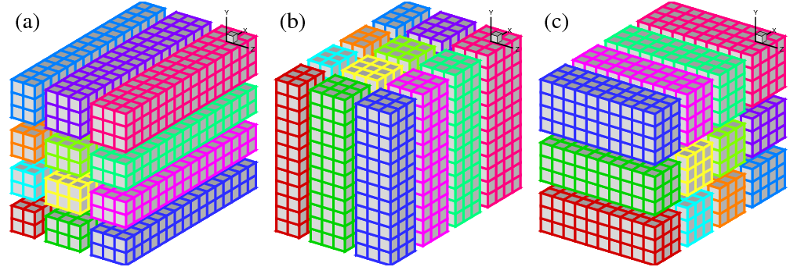
There are 2 methods of adding parallelism:
1. Domain decomposition
The space in which the computations are being performed is split up among the
different processors. I.e. every processor does the same work processes but on different
parts of the domain. This is the most common approach in adding parallelism to an
application.
Adding parallelism to a code
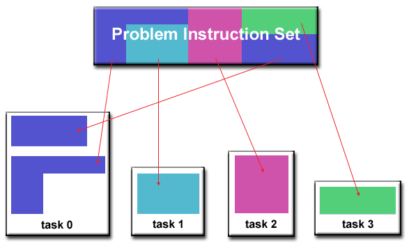
2. Task decomposition
Different processors perform different operations on the same or different data.
This approach is more complicated for parallelism:
-- more passing of data between tasks usually
-- complicated relationship between tasks
Symmetric multiprocessing (SMP)
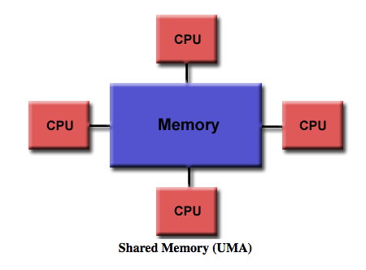
SMP is where multiple processors share a common memory block. No
data movement required as all processors can "see" the entire computational domain.
All modern multicore processors (CPUs and GPUs) can utilize SMP.
Implementing parallelism is (fairly) easy and quick. Common software implementations
include OpenMP and CUDA.
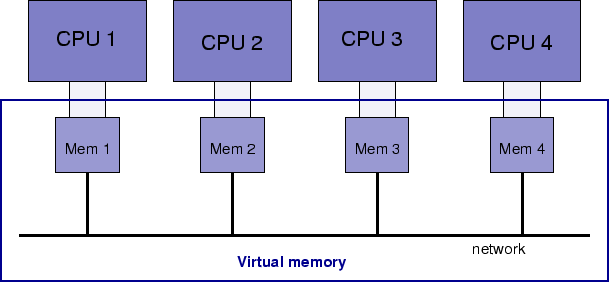
In a distributed memory architecture each CPU only has access to its own
local memory. If a CPU requires data from another CPU's memory, it must request
and wait for that data to be passed to it. MPI is the software interface that performs
the data request and movement.
Distributed memory allows a program to work on very large problems where the computational
domain would exceed the local memory of any processor.
GOAL
Determine the integral of some function between two given points.
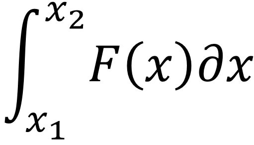
METHOD
Integral is equal to area under function's curve between the specified endpoints. Approximate
this area by summation of a series of rectangles drawn under the function. Higher the number of
rectangles, greater the accuracy of the area approximation.
Notice that the rectangles method introduces some error (denoted by the red). But
we can decrease this error by increasing the number of rectangles (or decreasing rectangle width).
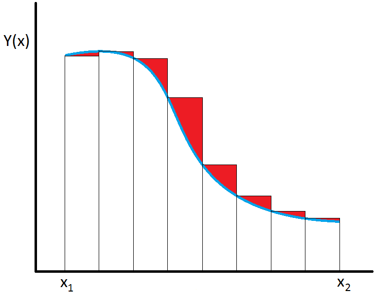
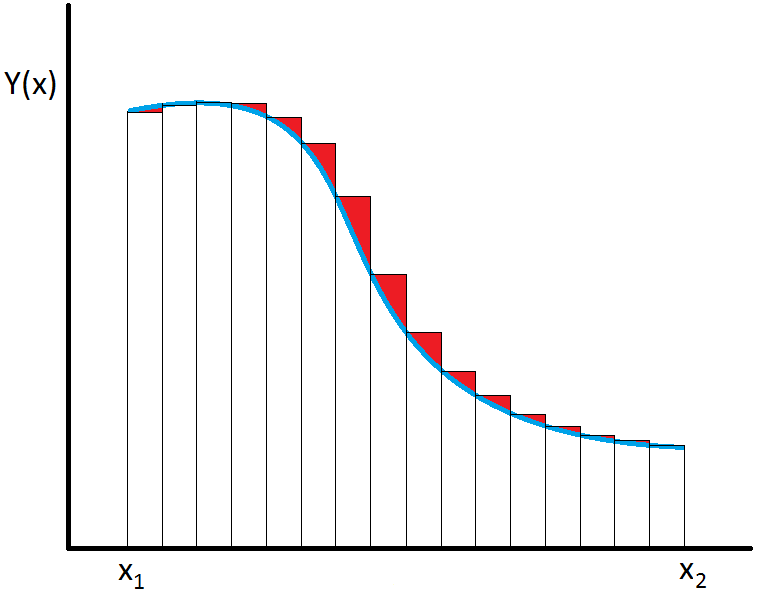
Integral turns into a simple summation. Let x be the width of a single rectangle.
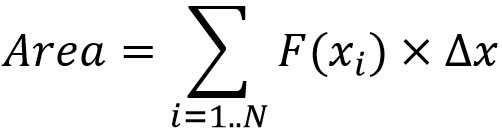
A simple algorithm would be:
rec_width = (some_constant)
sum = 0.0
for n = 1,num_rectangles:
sum = sum + F(xn) * rec_width
Key observations:
- most of the work concentrated in the for-loop
- area of each rectangle can be independently computed
- order of rectangle summation could be important*
*Adding a very small number to a very large number in a finite number
system can lead to inaccuracy!
PARALLELIZATION METHOD
Break the global sum into a a series of
partial sums that are computed on individual processors.
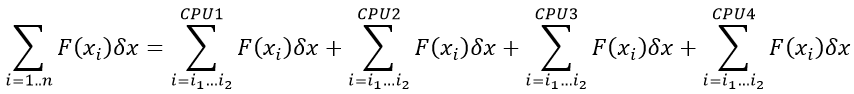
i1 and i2 are range of rectangles that
each CPU works. In the 4 CPU example, if we assume that there are 100 rectangles in total:
- CPU 1 would work on rectangles 1-25
- CPU 2 would work on rectangles 26-50
- CPU 3 would work on rectangles 51-75
- CPU 4 would work on rectangles 76-100
rec_width = (some_constant)
sum = 0.0
num_rectangles_per_cpu = num_rectangles / num_cpu
for n = 1 to num_rectangles_per_cpu:
if (on CPU1) j = n
if (on CPU2) j = n + num_rectangles_per_cpu
if (on CPU3) j = n + 2*num_rectangles_per_cpu
if (on CPU4) j = n + 3*num_rectangles_per_cpu
sum = sum + F(xj) * rec_width
global_sum = 0.0
for n = 1 to num_cpu:
global_sum = global_sum + sum[on CPU n]
LOCAL vs GLOBAL SCOPE VARIABLES
sum will have a different value on each different CPUs. It is an example of a
local-scope variable. CPUs will not know the values of local variables belonging to other CPUs.
global_sum, num_rectangles_per_cpu and
num_cpus are examples of global variables. Values of these variables are known
or accessible to all CPUs.
The most common mistakes in parallel programming involve programmers not realizing the proper
scope of variables.
GOAL
Predict the in-situ electric field (E) in a volume of dielectric of arbitrary size and shape that is
bombarded by an incident EM pulse.
METHOD
Dielectric volume has no initial E field. As the pulse passes through the volume, it induces an E field.
The total electric field at any given point is
Etotal=Epulse+Escatter
Escatter is the induced E between different points that have experienced the pulse.
The full volume integral equation describing the E field evolution is
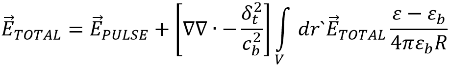
R is the distance between the point being evaluated and the points that have already
experienced the incident pulse.
This a form of the classical N-body problem
A predictor-corrector approach to solve the integral equation.
for 1 to num_timesteps:
for each point in volume:
evaluate integral with ETOTAL from last timestep
create updated ETOTAL value
re-evaluate integral term with updated ETOTAL
correct ETOTAL as final value for this timestep
Integral is approximated by a sum over all points in volume.
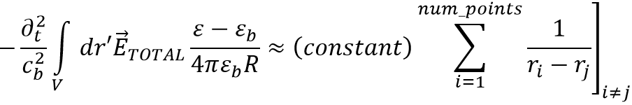
Similarities with simple numerical integration example
- work concentrated inside a loop
- same domain decomposition approach can be applied
- summation order not important
PARALLELIZATION METHOD
Volume is subdivided into a number of grid-points. These grid points are gathered into
regions that are allocated to individual CPUs. Each CPU is responsible for evaluating the
integral for only the points it "owns".
sum = 0.0
for n = 1 to num_cpus
sum = sum + terms for points located in CPU's 'region'
for i = 1 to num_cpus (i /= n):
determines sum terms for points between CPU n and i
terms sent to CPU n
sum = sum + terms
Key Points
- entire global field never fully formed. Each CPU holds a piece of the updated global domain.
- serial bottleneck exists as one needs to loop over all CPUs to update each CPU's section of the global domain.
Performance
Even with obvious bottleneck, algorithm scales nicely on IBM Blue Gene/P platform. With a large enough
computational domain, application has run efficiently at 32,768 individual CPUs.
The Unified Model (UM) is the numerical model developed at the UK MetOffice
for climate and weather research and forecasting. It contains hundreds of thousands of lines of code. It is
comprised of 4 sub-models:
- UM - atmosphere model
- NEMO - ocean model
- CICE - sea ice model
- JULES - land processes model
Each sub-model is a fully parallel application utilizing domain (and task) decomposition.
One can run 1 or more sub-models for a simulation. For example,
- EcoConnect runs use UM+JULES for its weather forecasts
- Olaf Morgenstern uses UM+JULES+NEMO+CICE for his climate runs
Running sub-models is an example of task decomposition. The CPUs allocated to the "full" UM job are
divided between the running sub-models. This division is usually controlled by input from the user.
The most difficult part is when information needs to be passed between the different tasks.
One can run 1 or more sub-models for a simulation. For example,
- EcoConnect runs use UM+JULES for its weather forecasts
- Olaf Morgenstern uses UM+JULES+NEMO+CICE for his climate runs
Running sub-models is an example of task decomposition. The CPUs allocated to the "full" UM job are
divided between the running sub-models. This division is usually controlled by input from the user.
The most difficult part is when information needs to be passed between the different tasks.
Purely internal
Task decomposition is controlled by IF-THEN calls in the main code. Information is available and
readily passed inside the main application. This is how the UM passes information between the atmosphere
and land sub-models
Internal calls
Another software library or application performs the information exchange. However, it provides
function calls that are used inside the main application so the passing of information still appears to be
internal. This is how the UM passes information between the atmosphere and sea-ice/ocean sub-models.
Externally
Some applications use a "loose-coupling" method. Usually this involves information being passed by
files. Eg. Output file of one sub-model is used later as input for another sub-model. Easy, but least
performing, form of information passing.